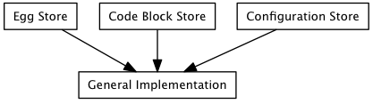
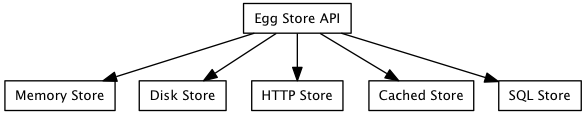

The key-value store API exposes an interface on top of whatever backend implementation is used by subclasses. This permits code which requires access to a key-value store to use it in a uniform way without having to care about where and how the data is stored. The API is also agnostic about what is being stored, and so while the key use case is for egg repositories, potentially any data values can be stored in the key-value store.
We have seen a common need throughout client and internal development efforts at Enthought for various ways of persistently storing data and associated metadata and making it available within the applications we write. Over the years, Enthought has implemented a number of different storage systems with similar general functionality; sometimes even with multiple ones in the same project. The particular motivation which has prompted the creation of the storage API, and the initial use-case is a refactor of the Enstaller project to provide a cleaner set of internal APIs.
When faced with a problem like this, it is tempting to start from the implementation level and build a solution to the problem at hand (eg. “I need to store eggs, so I build an egg store”). In generalizing, it is then even more tempting to try to replace existing implementations with a more generic implementation (eg. “I need to store eggs and apps and code blocks both locally and remotely, so I build a NoSQL-backed data store server which I can run locally if I need to”). However any generic implementation must make trade-offs, and the trade-offs may end up being inappropriate for particular use cases (eg. “Now I need to have an in-memory code-block store for efficiency, and my store’s optimized for remote access...”).

Alternatively, it is tempting to start from the task that is being attempted (eg. “I need to store eggs, so I build an egg store”) and then generalize the implementation (eg. “Now I need to store eggs remotely, so I’ll build a remote egg store, but at least I’ll use the same API”). However, again the specifics of the implementation may make it inappropriate for particular use cases (eg. “Now I need a code-block store, so I’ll wrap up my code-blocks as eggs and use an egg store... but now they’re 100 times bigger than they need to be...”)

This storage API instead to simply provides an API through which data providers and data consumers can talk. The API deliberately makes no assumptions about what is being stored (eg. eggs vs. code blocks) but also makes no assumptions about how the data is stored (eg. in memory, on disk, in a database, through a remote server). This allows developers to re-use code more efficiently by permitting them to choose the pieces that make sense for their particular use case (eg. “I need an in-memory code-block store, so I’ll take my general code-block store logic which uses the API, and my in-memory store logic which implements the API, and join them together”). Not every combination may make sense (an in-memory egg store is probably a bad idea, for example), but the ability to pick and choose allows a great deal of flexibility.
![digraph diagram2 {
node [shape=box, fontname=sans, fontsize=10, height=0.1, width=0.1]
"Egg Store" -> "Key-Value Store API"
"Code Block Store" -> "Key-Value Store API"
"Configuration Store" -> "Key-Value Store API"
"Key-Value Store API" -> "Memory Store"
"Key-Value Store API" -> "Disk Store"
"Key-Value Store API" -> "HTTP Store"
"Key-Value Store API" -> "Cached Store"
"Key-Value Store API" -> "SQL Store"
}](../_images/graphviz-0a67c9692c62bcbcb0fc6152e9585f22a3b392cf.png)
This also reflects the reality that developers frequently do not have complete freedom to choose the best possible data store solution due to external constraints. By writing to the storage API, you have the opportunity to more easily re-use components, as well as the possibility of later replacing the sub-optimal solution with a better one.
This approach also allows developers to write general connectors, adapters and other building blocks for repositories which only use the API and don’t care about what is being stored. This should permit fast prototyping of functionality, if nothing else, but in many cases this approach may be good enough for production code. For example, a generic joined store could be written which takes a list of other stores which implement the API and when asked for data from the store asks each store in sequence for the data until it finds what is requested. To code using the joined store, it appears just like any other store, and the joined store doesn’t care how the stores it joins are implemented.
The keys of the key-value store are strings, and the key-value store API makes no assumptions about what the strings represent or any structure they might have. In particular keys are assumed to be case sensitive and may include arbitrary characters, so key-value store implementations should be careful to handle any issues which may arise if the underlying data store is case insensitive and has special characters which need to be escaped.
Each key has associated with it a collection of metadata and some binary data. The key-value store API makes no assumptions about how the metadata and data is serialized.
The values stored in the key-value store consist of two parts, a binary data stream and a metadata dictionary. These are encapsulated into a light-weight data-structure which can hold additional implementation-specific information.
In particular, implementations should expose attributes or properties ‘size’, ‘created’ and ‘modified’ which proved the number of bytes in the data stream, the creation time of the key, and the most recent modification time of the key. These additional attributes are primarily provided for internal use and to assist composition and replication of key-value stores.
The Value should contain enough information to extract the data and metadata, but does not have to actually open those resources until they are requested.
For writable repositories, data should be supplied to keys via a Value subclass, if possible. This allows copying between repositories using code like:
repo1.set(key, repo1.get(key))
or copying between keys with code like:
repo.set(key1, repo.get(key2))
Since files are likely to be common targets for extracting data from values, or sources for data being stored, the key-value store API provides utility methods to_file() and from_file(). Simple default implementations of these methods are provided, but implementations of the key-value store API may be able to override these to be more efficient, depending on the nature of the back-end data store.
For backwards compatibility, value objects express an API that makes them appear as a 2-tuple of (data, metadata).
The binary data stored in the values is presented through the key-value store API as file-like objects which implement at least read(), close(), __enter__() and __exit__() methods as well as having attributes which provide some amount of information about the stream, such as length, last modification time, creation time, and so forth. Particular backends may choose to provide additional attributes or implement additional methods as needed.
Frequently this will be a wrapper around a standard file, StringIO object, a urllib file-like object or other wrapper about a socket. The read() method should accept an optional number of bytes to read, so that buffered reads can be performed.
The key-value store API gives no special meaning to the bytes stored in the value. However care should be taken that it is in fact bytes being stored, and not a (possibly unicode) string; in particular, if an actual file is being used it should be opened in binary mode.
Metadata should be representable as a dictionary whose keys are valid Python identifiers, and whose values can be serialized into reasonable human-readable form (basically, you should be able to represent the dictionary as JSON, XML, YAML, or similar in a clear and sane way, because some underlying datastore will).
Metadata can be retrieved via the get_metadata() method or as the second element of the tuple returned by get(). Metadata can be set using set() or set_metadata() and existing metadata can be modified using update_metadata() (similarly to the way that the update() method works for dictionaries).
There is nothing that ensures that metadata and the corresponding data are synchronised for a particular object. It is up to the user of the API to ensure that the metadata for stored data is correct.
We currently make no assumptions about the metadata keys, but we expect conventions to evolve for the meanings and format of particular keys. Given that this is generally thought of as a repository for storing eggs, the following metadata keys are likely to be available:
- type
- The type of object being stored (package, app, patch, video, etc.).
- name
- The name of the object being stored.
- version
- The version of the object being stored.
- arch
- The architecture that the object being stored is for.
- python
- The version of Python that the object being stored is for.
- ctime
- The creation time of the object in the repository in seconds since the Unix Epoch.
- mtime
- The last modification time of the object in the repository in seconds since the Unix Epoch.
- size
- The size of the binary data in bytes.
Note that there is a difference in intent between the information stored in the metadata and the attributes on the value object: value object attributes are controlled by the key-value store implementation, whereas metadata are completely arbitrary from the point of view of the key-value store and are completely up to the user code as to what information is stored.
Before a store can be used, its connect() method must be called to allow any long-lived resources to be allocated and prepared for use, and to optionally handle any authentication that might be required.
Conversely, the store’s disconnect() method should be called when code is done with the store, allowing it to release any long-lived resources.
A very simple querying API is provided by default. The query() method simply takes a collection of keyword arguments and interprets them as metadata keys and values. It returns all the keys and corresponding metadata that match all of the supplied arguments. query_keys() does the same, but only returns the matching keys.
Subclasses may choose to provide more sophisticated querying mechanisms.
The base abstract key-value store has no notion of transactions, since we want to handle the read-only and simple writer cases efficiently. However, if the underlying storage mechanism has the notion of a transaction, this can be encapsulated by writing a context manager for transactions. The transaction() method returns an instance of the appropriate context manager.
All implementations should have an event manager attribute, and may choose to emit appropriate events. This is of particular importance during long-running interactions so that progress can be displayed. This also provides a mechanism that an implementation can use to inform listeners that new objects have been added, or the store has been otherwise modified.